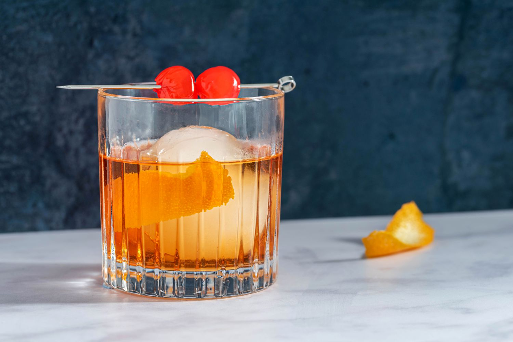

Old Fashioned

Ingredients
- 1 teaspoon sugar
- 3 dashes Angostura bitters
- 1 teaspoon water
- 2 ounces bourbon (or rye whiskey, if preferred)
- Garnish: orange twist
Steps
-
Add the sugar and bitters into a mixing glass, then add the water, and
stir until the sugar is nearly dissolved.
-
Fill the mixing glass with ice, add the bourbon, and stir until
well-chilled.
- Strain into a rocks glass over one large ice cube.
-
Express the oil of an orange twist over the glass, then drop into the
glass to garnish.